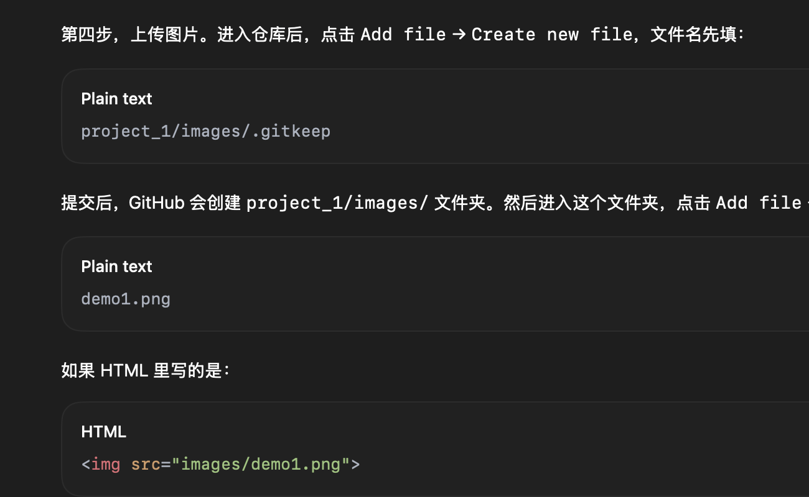

AI-Driven Traffic Flow Modeling
A brief one-sentence summary of the project, highlighting the main idea, contribution, or application.
Project Overview
Car-following and lane-changing models are cornerstones for understanding driver behavior, traffic dynamics, and supporting autonomous driving. As early as 2014, at the dawn of the deep learning era, my team proposed an innovative kNN-based data-driven car-following model. This model has been cited almost 200 times, and it is widely recognized as one of the first data-driven car-following models by review articles published by scholars from institutions such as the University of California, Berkeley (Zhang et al., 2025), the University of Washington (Chen et al., 2023), and Imperial College London (Rowam et al., 2025).
In 2019, my team developed the first deep-learning-based lane-changing model using DBN and LSTM neural networks, which has since been cited over 300 times and is widely recognized in subsequent research (Siebke et al., 2023; Han et al., 2024; Wang et al., 2024; Huang et al., 2025) as a pioneering contribution to AI-driven modeling of driver behavior and traffic dynamics.
Images and Animations
